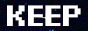
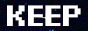

à propos :
Vert Partout est un artiste basé à montréal/tio:tia'ke, qui partage son temps entre sa communauté, l'art & la poésie, et passer trop de temps à l'ordinateur. Il crée des images (et toutes sortes de bébelles que tu peux mettre sur ton frigo), il écrit des poèmes, et des fois il parle un peu trop de Linux dans des activités sociales.
Ses créations portent sur les thèmes de :
- la fiction (son impossibilité, sa nécessité)
- la création comme collage
- les cyborgs et les corps (organiques, mécaniques, chimiques)
- les souvenirs de sa phase emo
- la supériorité de l'oubli sur le pardon (en termes d'efficacité)
- les hommes et la (trans)masculinité (but like, in a gay way)
La poésie c'est pas sérieux pis c'est vraiment gênant.
Est-ce que quelqu'un peut venir le chercher? Il est encore une fois pris à l'intersection de l'art et la technologie.

pour toute question, information, commande, demande spéciale, invitation, commentaire, écrivez-moi un message!

note : indiquez votre vrai email, sinon je ne pourrai pas vous envoyer de réponse
Poésie :
Publications
- « Skyrockstalgie » (poème), revue Cavale, no 14, automne 2021.
- « Cette ville c'est le bruit du styrofoam », Revue PØST, no 4.3, octobre 2019.
- « Toaster » (poème), Journal l'Escouade, été 2019, en ligne.
Autopublications (zines)
- Cette ville c'est le bruit du styrofoam (2019)
- moving to montreal won't fill the void (2020)
- Pomélo (2020)
- On était déjà queer-coded pour l'apocalypse (2020)
- Le bateau de Thésée (2020)
- Gaysastre (2021)


 



Trucs techniques / You're telling me a queer coded this?
art :
Pour l'édition des images, j'utilise GIMP et ImageMagick. Les designs des stickers et prints sont souvent faits à la main (à l'aquarelle ou à l'encre), puis modifiés digitalement. Ensuite je les fais imprimer, pis je les découpe moi-même.
Pour le databending, j'utilise Audacity et/ou un éditeur de texte.
Les logiciels libres, c'est nice.
site web :
Ceci est un site tout simple. Si vous voulez voir le code il est ici.
Pourquoi je n'ai pas une vraie boutique en ligne? Parce que je ne veux pas.
Le JavaScript ne sert qu'à la fonction d'agrandir les images quand on clique dessus sur la page "boutique", et les effets étoilés de la page d'accueil (qui ont été déterrés de l'ancien internet.)
Il est hosté sur Netlify, en attendant que je puisse le hoster dans ma chambre.
La police utilisée est pixel operator.
En veux tu un toi aussi? Écris-moi!
irrévérent comme
un très jeune enfant
qui joue à la tag
pendant des funérailles
un chat qui se lave le cul
sur la table à manger
devant la visite
un algorithme
qui hausse les épaules
face au captcha